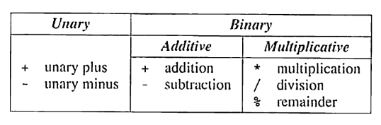
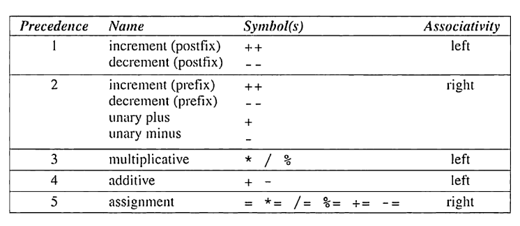

Arithmatic Operators
The arithmetic operators:

Additive and multiplicative operators are binary because they require two operands.
The unary operators require one operand:
i = +1where+is used as a unary operatorj = -iwhere-is used as a unary operator
Unary + operator does nothing, and wasn’t even included in K&R’s C. It is generally used to emphasize that it is a constant is positive.
Binary operators, with the exception of %, allow for mixing integers and floating-point numbers.
When an
intandfloatare mixed, the result is of typefloat- e.g.
9 + 2.5 = 11.5
- e.g.
The / and % operators are a bit different:
The
/can produce unusual results, because when both operands are integers, the/truncates the result by dropping the fractional part- e.g.
1/2 = 0
- e.g.
The
%operator require integer operands, otherwise it won’t compile.A zero on either side of
/or%will cause undefined behavior.C89 and C99 handle negative numbers with
/and&different:C98: If either operand is negative, the result can be rounded up or down (depends on implementation)
C99: The results if either operand is negative are always truncated down towards zero
- e.g.
-9/7 = -1and-9%7 = -2
- e.g.
Implementation defined behavior
The C standard deliberately left parts of the language unspecified with the understanding that “implementation”, or the software needed to compile, link, and execute program on a specific platform, will fill in the details.
Because of this, some programs may behave differently on different platforms.
This is a bit dangerous but it reflect’s C’s philosophy - keep it efficient.
Operator Precedence and Associativity
C uses operator precedence to resolve ambiguity in how expressions are evaluated It follows the following relative precedence:
| Highest | + , - |
(unary) |
* , /, % |
||
| Lowest | +, - |
(binary) |
An operand is said to be left associative if it groups from left to right.
The binary arithmetic operators (
*,/,%,+, and-) are all left associative. Therefore,i - j - k == (i - j) - ki * j / k == (i * j / k)
Operands are said to be right associative if it groups from right to left. The unary operators + and - are right associative, therefore:
- + i == -(+i)
Computing a UPC Check Digit
Products in US and Canada have a bar code, a Universal Product Code (UPC), that identifies the manufacturer and the product.
- Each barcode is a 12-digit number, that is usually printed underneath the bars.
- For example, 0 13800 15173 5 are the digits for a package of Stouffer’s French Bread Pepperoni Pizza.
- The first digit identifies the type of item (0-7)
- 2 that needs to be weighed, 3 for drugs/health, 6 for coupons
- The next group of 5 digits is the manufacturer code (e.g. 13800 is Nestle)
- The next 5 digits identifies the product (including the size)
- The final digit is the check digit that helps identify errors in the preceding digits.
- If the UPC is scanned incorrectly, the first 11 digits won’t be consistent with the check digit, and it will be rejected.
- The first digit identifies the type of item (0-7)
How the check digit is calculated:
- Add the first, third, fifth, seventh, ninth, and eleventh digits
- Add the second, fourth, sixth, eighth, and tenth digits
- Multiply the first sum by 3 and add it to the second sum
- Subtract 1 from the total
- Divide by 10
- Subtract the remainder from 9
For the Stouffer’s example:
- 0 + 3 + 0 +1 +1 +3 = 8
- 1 + 8 + 0 + 5 + 7 = 21
- 24 + 21 = 45
- 45 - 1 = 44
- 44 / 10 = 4.4 or 4
- 9 - 4 = 5
We can write a program that creates a check digit based on UPC groups:
Enter the first (single) digit: 0
Enter the first group of five digits: 13800
Enter the second group of five digits: 15173
Check digit: 5- We will read each 5-digit grouping as five 1-digit numbers.
/* Computes a Universal Product Code check digit */
#include <stdio.h>
int main(void)
{
int d, i1, i2, i3, i4, i5, j1, j2, j3, j4, j5,
first_sum, second_sum, total;
printf("Enter the first (single) digit: ");
scanf("%1d", &d);
printf("Enter first group of five digits: ");
scanf("%1d%1d%1d%1d%1d", &i1, &i2, &i3, &i4, &i5);
printf("Enter second group of five digits: ");
scanf("%1d%1d%1d%1d%1d", &j1, &j2, &j3, &j4, &j5);
first_sum = d + i2 + i4 + j1 + j3 + j5;
second_sum = i1 + i3 + i5 + j2 + j4;
total = 3 * first_sum + second_sum;
printf("Check digit: %d\n", 9 - ((total - 1) % 10));
return 0;
}Assignment Operators
C’s = (simple assignment) operator is used to store a value in a variable to use later.
- For updating a value that is already stored n a variable, C has compound assignment operators.
Simple assignment
v = eevaluates the expressioneand copies its value intovvandedoesn’t have to be the same type. The value ofewill be converted to typevwhen the assignment takes place.
While many languages treat assignment as a statement, in C, assignment is an operator, just like +.
The act of assignment produces a result, just as adding two numbers produces a result.
The value of an assignment
v = eis the valuevafter the assignment.- e.g. The value
i = 72.99fis 72 not 72.99
- e.g. The value
Side effects
Most operators don’t modify their operands -
i + jdoesn’t modifyiorj, just, computes the sum ofiandj.Some operators have side effects as they do more than just compute their value.
The assignment operator has side effects as it modifies the left operand.
i = 0produces the result 0 with a side effect of assigning 0 toi
Since assignment is an operator, several can be changed together: i = j = k = 0;
- The
=operator is right associative, soi = j = k = 0;is equal toi = (j = (k = 0));
Note - Be careful of unexpected results in chained assignments as a result of type conversion:
int i;
float f;
f = i = 33.3f;iis assigned the value of 33, thenfis assigned 33.0 (not 33.3)
The form v = e is generally allowed whenever a value of type v would be permitted. For example:
i = 1;
k = 1 + (j = i);
printf("%d %d %d\n", i , j , k); /* prints "1 1 2" */j = icopiesitojThe new value of
jis then added to1, givingkthe value of 2.This is not a recommend way of assignment as “embedded assignments” are hard to read and can be a source of subtle bugs.
Lvalues
The assignment operator requires an lvalue, which is the left operand.
The lvalue represents an object stored in memory, not a constant or a result of a computation.
Variables are lvalues, whereas expressions are not (
10,2*i, etc)
Compound assignment
Suppose we want to increase a variable’s value by 2:
i = i + 2;We can also use C’s compound assignments to shorten these types of statements:
i += 2; /* same as i = i + 2*/- The value of the right operand is added to the variable on the left.
The most popular compound assignment operators:
v += eaddsvtoe, storing the result invv -= ev *= ev /= ev %= e
Note: v += e is not equivalent to v = v + e
One problem is the operator precedence:
i *= j + kisn’t the same asi = i * j + kThere are cases where
v += ediffers fromv = v + ebecausevitself has a side effect.This applies to the other compound assignment operators
Compound assignment operators have the same properties as the = operator (e.g. right associative):
/* These are equivalent */
i += j += k;
i += (j += k);Increment and Decrement operators
C allows increments and decrements to be shortened using the ++ (increment) and -- (decrement)
These can be used as prefix operators (e.g.
++iand--i)These can be used as postfix operators (e.g.
i++andi--
Like assignment operators, they have side effects.
Prefix (
++i) does a pre-increment, where it doesi + 1and as a side effect, incrementsi\- This means - “increment
iimmediately”.
- This means - “increment
Postfix (
i++) does the post-increment, where it produces the resultiand as a side effect, increments it afterwards.This means “use the old value of
ifor now, and then incrementilater”Note: The C standard doesn’t specify an exact time when it increments
ilater, but it’s assumed that it will be incremented before the next statement is executed.
i = 1
printf("i is %d\n", i++); /* prints "i is 1" */
printf("i is %d\n", i); /* prints "i is 2" */The postfix versions of ++ and == have:
Higher precedence than unary plus and minus
Are right associative
Expression Evaluation
The most common operators with their precedence (highest is 1) , symbol, and associativity:

Suppose we have the following expression:
a = b += c++ - d + --e / - fThe highest precedence is postfix
++, which gives the equivalent expressiona = b += (c++) - d --e / -fThe next highest is prefix
--and unary-, with a precedence of 2, which gives usa = b += (c++) - d + (--e) / (-f)- Since the other
-is to the left it must be subtraction not unary
- Since the other
The next highest is
/with a precedence of 3, which gives usa = b += (c++) - d + ((--e) / (-f))The next highest is 4, with both a
+and a-.- These are associative left, so the parentheses go around the subtraction first then adding both parentheses groups, which gives us
a = b += (((c++) - d) + ((--e / (-f)))
- These are associative left, so the parentheses go around the subtraction first then adding both parentheses groups, which gives us
Lastly, we have the assignments
=and+=that are both 5s, which gives us(a = (b += ((c++) - d + ((--e) / (-f)))))
Order of subexpression evaluation
C doesn’t define the order in which subexpressions are evaluated with the exception of ones involving logical and, logical or, conditional, and comma operators.
- This means for the expression
(a + b) * (c - d), we don’t know if(a + b)is evaluated before/after(c-d)
Note: Avoid writing expressions that access the value of a variable and also modify the variable elsewhere in the expression. For example:
(b = a + 2) 0 (a = 1)This accesses the value of
ato computea + 2but also modifies the value ofaby assigning it to 1.Your better off using assignment operators in subexpressions:
a = 5;
b = a + 2;
a = 1;
c = b = a;Besides assignment operators, increment and decrement are the only operators that modify their operands. Make sure to be careful using these so they don’t depend on a particular order of operations:
- e.g.
i = 2; j = i * i++;
This is an example of undefined behavior, which means it the results are dependent on the compiler. Programs could fail to compile, return/assign a random value, or crash.
Expression Statements
Any expression can be used as a statement regardless of the type or what it computes.
Ending an expression with a semicolon turns it into a statement.
i++;is a valid statement